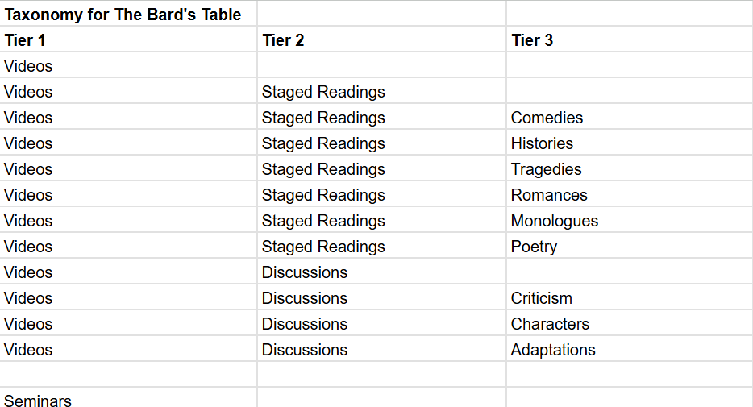

Shakespeare Taxonomy
At the beginning of my course on the construction of indexing languages, my group and I decided to make a thesaurus on Shakespeare. This thesaurus would be for indexing and searching for any documents in an existing database of work on Shakespeare. The domain of Shakespeare in this database would be Shakespeare studies in a college-level course introducing undergraduate students to the scholarly analysis of Shakespeare's work. We collected hundreds of terms from sources matching this description such as course syllabi, textbooks on Shakespeare, and Shakespeare's work itself. In PoolParty, we sorted the terms in our thesaurus using a classified schedule which used categories based on defined subject areas in our domain. The rest of the display on PoolParty used an alphabetical schedule, which was comprised of individual entries for each term.
 After constructing our thesaurus, we received a client description from a fictional company called The Bard's Table. They were a company that sold staged readings and seminars on Shakespeare. They were creating a website which would sell those readings and seminars as products. The website would also include videos as promotional materials and educational resources on Shakespeare's life. For this website they needed a taxonomy. We used the thesaurus as the basis of our taxonomy, but found that the purpose of our thesaurus was not well-suited to building a commercial taxonomy. We repurposed many of our thesaurus terms but largely had to create the taxonomy from the ground up.
After completing our work on the thesaurus and taxonomy, we finally began to work on an ontology and knowledge graph to describe the domain of Shakespeare Studies as a whole. With this ontology we attempted to represent the concepts, relationships, and properties present in the domain of Shakespeare Studies. The result of this can be seen in the image at the top of this page.
The Taxonomy
- Videos
- Staged Readings
- Comedies
- Histories
- Tragedies
- Romances
- Monologues
- Poetry
- Discussions
- Criticism
- Characters
- Adaptations
- Seminars
- Performance Studies
- Acting
- Staging
- Interpretation
- Playwriting
- Analysis
- History
- Authorial Intention
- Language
- Educational Resources
- Shakespeare's Life
- Web Resources
- Articles
- Books